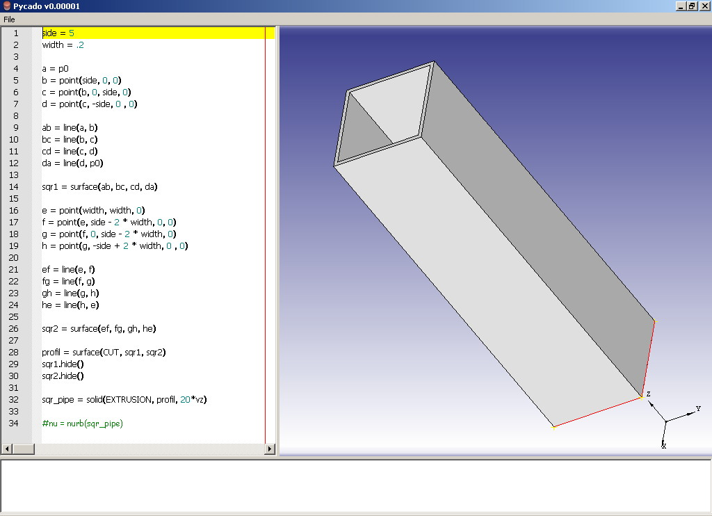
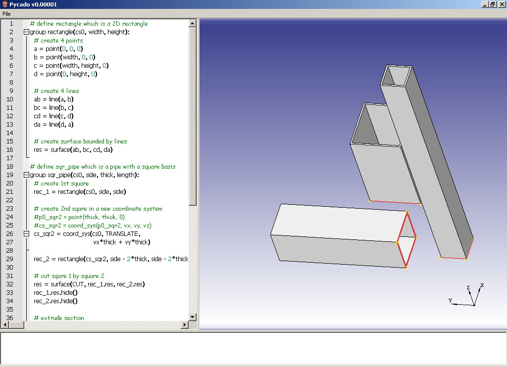
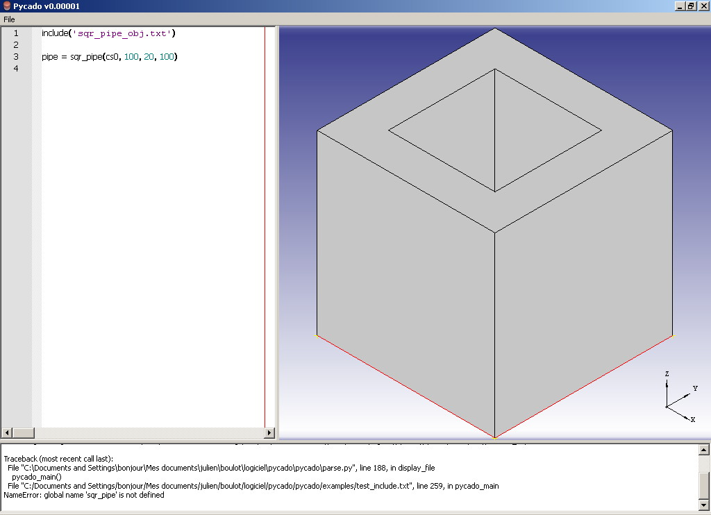
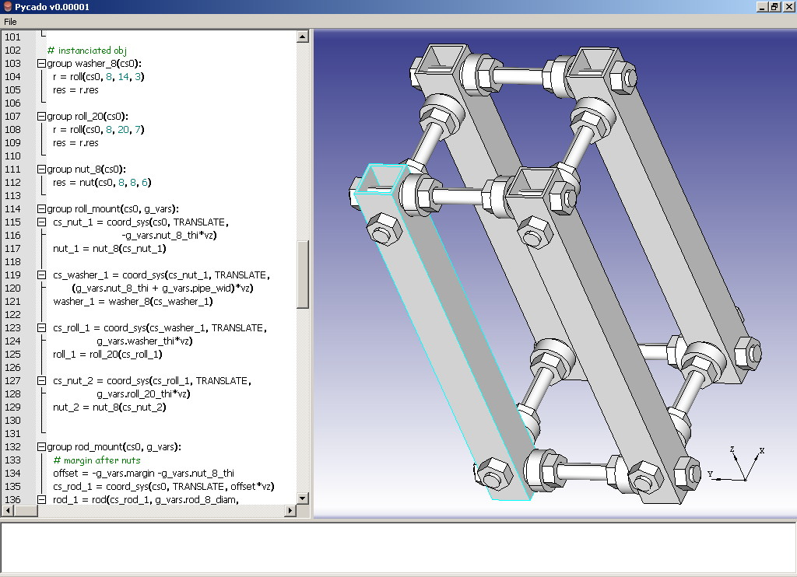

Pycado is an object oriented scripting language for 3D CAD. It’s based upon the pythonocc library and written in Python. The language itself is a python subset.
Pycado is also an IDE for the scripting language. This IDE contains three main parts:
- a text editor, to edit scripts
- a graphical window where 3D components are drawn
- a log viewer
The object part of the language is really important because it allows to instantiate objects and build new objects based on shared components.
“Object” must be understood as “mechanical part” rather than traditional computer language meaning.
Each object owns a coordinate system and attribute members. Instantiations are achieved by choosing a coordinate system and attribute values.
The language is a python subset, so the scripts can be parsed by the python parser and cad objects are added in memory.
This strategy was chosen to update a part of an assembly or a component without compiling all the scripts and called objects, only impacted parts are updated. To achieve this, pycado is using a dependency tree.
Procedural programming of simple component (sqr_pipe_non_obj.txt example)

Object programming (using group keyword) of the same simple component, several instanciations with differents parameters and coordinate systems (sqr_pipe_obj.txt example).

Object instanciation via file import (test_include.txt example).

More advanced components using several objects and instanciations parameters (cnc_components.txt example)

Pycado is on very early stage, kind of proof of concept. Some example scripts
were written. They are quite simple but give a good preview of our objectives.
Here are some directions to improve the application:
- complete the base API (point / line / curve ...). This API should stay simple
and should be associated with an integrated help in the IDE
- create interaction between the graphical window and text editor, e.g. copy
the name of the selected component to paste it in the editor
- write a complex example of 3D CAD object to figure the limits of our approach
Pythonocc: http://www.pythonocc.org/
OpenCASCADE library: http://www.opencascade.org/
SWIG: http://www.swig.org/
QScintilla:
http://www.riverbankcomputing.co.uk/software/qscintilla/intro
Julien Blanchard (julienbld --- yahoo --- fr)
Charles Clément (caratorn --- gmail --- com)
You can download this project in either zip or tar formats.
You can also clone the project with Git by running:
$ git clone git://github.com/julienbld/pycado